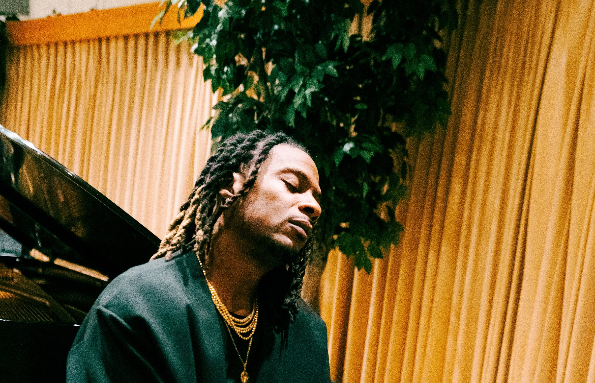
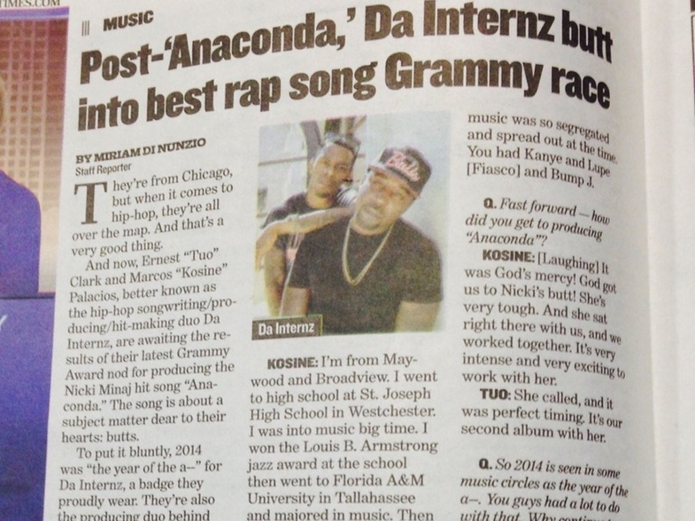
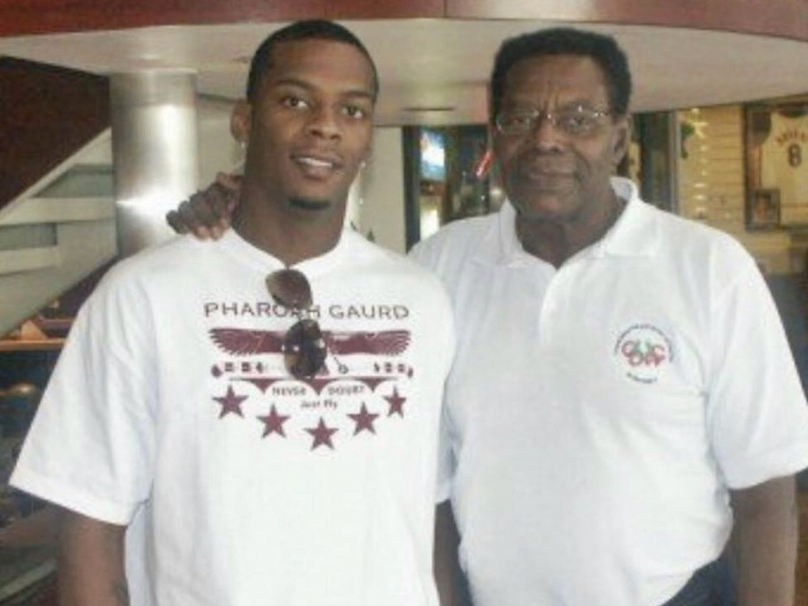

01
Records & Sound
Production, songwriting, artist development, music supervision, and sonic identity for artists, labels, film, and brands.
Start a Project
Chicago raised · Los Angeles built · Garifuna blood
Producer. Storyteller. Cultural Architect.
A multi-platinum creative force behind defining records, screen stories, cultural experiences, and the next generation of creators.
Cultural Proof
Music · Film · Television · Education · Cultural Strategy
The New Chapter
A song born from grief, lineage, and the white butterfly that appeared after Mama Pearl's passing.
What Kosine Builds
01
Production, songwriting, artist development, music supervision, and sonic identity for artists, labels, film, and brands.
Start a Project02
Acting, hosting, television, film, media appearances, and live performance. Presence built for the camera and the room.
Book for Media03
Keynotes, masterclasses, institutional partnerships, consulting, and creative entrepreneurship. The intern never graduates.
Book a Talk04
Strategic ventures, intellectual property development, cultural partnerships, and advisory work. Ownership over applause.
Partner With UsSelected Stories

Music
How a Chicago kid's drums ended up underneath one of the most recognizable records of the decade.
Read the StoryLegacy
Grief, lineage, and the sign that arrived when the family needed it. The story inside the song.
Read the Story
Lineage
The father who set Guatemala's high jump record, carried the flag at the 1968 Olympics, and passed the discipline down. Where the House of Palacios begins.
Read the StoryWork With Kosine
The Mailing List
Private transmissions on music, culture, business, and legacy.
No noise. Unsubscribe anytime.